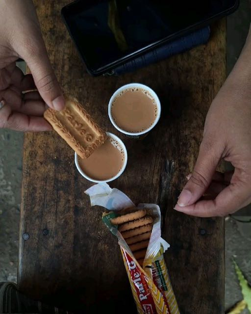
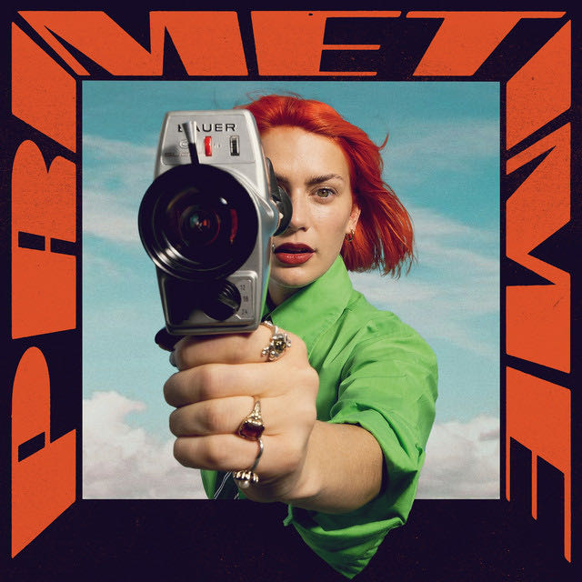
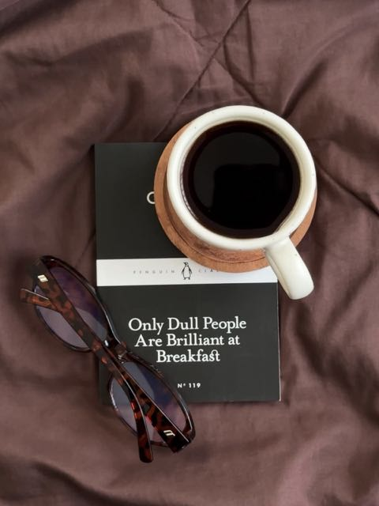
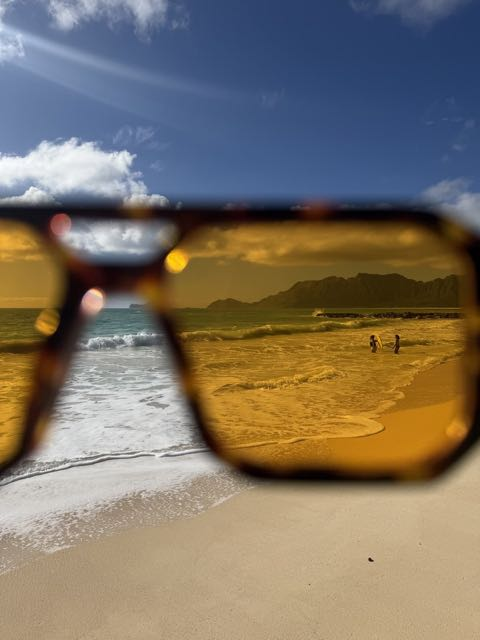
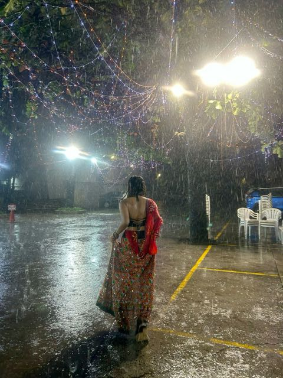
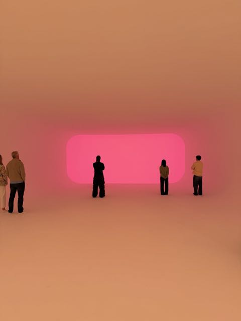

15m
@noorsaved♫Aa↗▤+2toEvenings together

PHOTOChai after the film
MUSICberlin night life
BOOKOnly Dull People Are Brilliant at Breakfast
PHOTOAn afternoon by the sea
NOTEThe rain came early
FILMAll We Imagine as Light